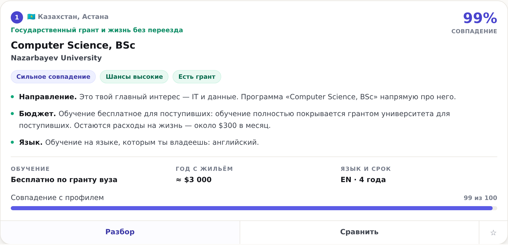
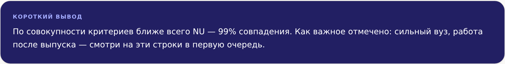
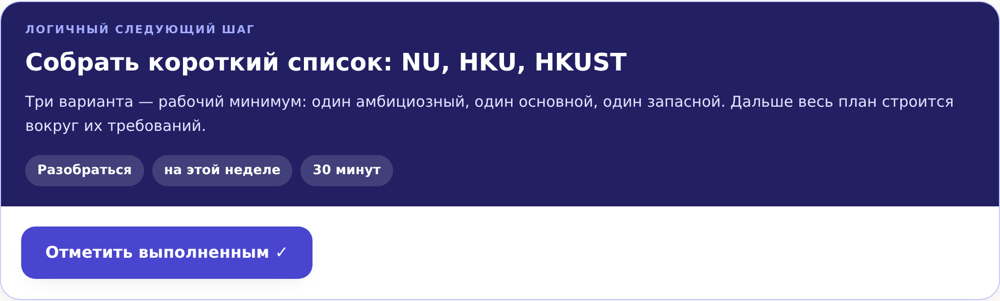
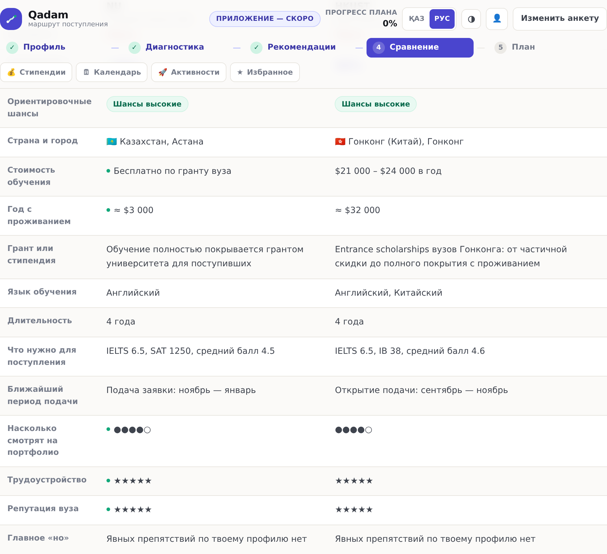
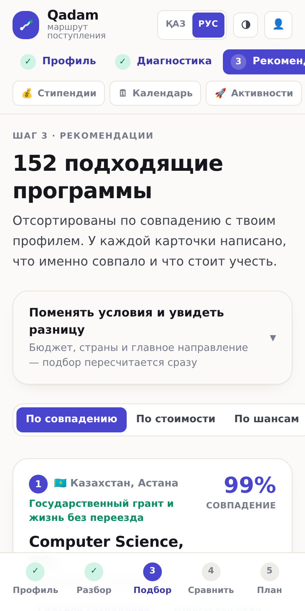
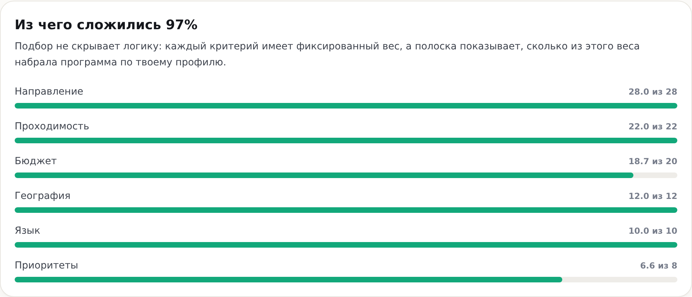
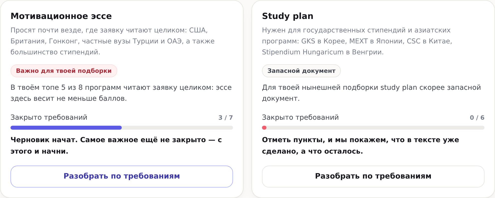

LOCUS Startup Hackathon 2026 · Кейс 02
Превращает профиль и цель абитуриента в маршрут: куда поступать, почему этот вариант подходит и что делать следующим шагом.
01 · Проблема
Направление, страна, вуз, экзамены, документы, дедлайны, активности — и всё связано между собой.
Сайты вузов, чаты, форумы, агенты. Данные противоречат друг другу, а сверять их некому.
Рекомендации слишком общие. Непонятно, что подходит именно тебе и какое действие выполнить сейчас.
Каталоги вузов отвечают на вопрос «что существует», но не на «что подходит мне» — и заканчиваются там, где начинается подготовка.
AI-чаты звучат убедительно, но выдают советы без причины и без проверяемых источников, а разговор не превращается в план.
02 · Решение
Не набор экранов, а маршрут: каждый шаг опирается на предыдущий и заканчивается одним понятным действием.
Анкета из 7 экранов: этап учёбы, интересы, успеваемость, языки, экзамены, страны, бюджет и приоритеты.
Образовательная цель, что играет за тебя, что ограничивает выбор, насколько полно заполнен профиль.
Программы с процентом совпадения и объяснением «почему подходит» на человеческом языке.
До трёх вариантов рядом по 13 параметрам, с отметкой, где каждый выигрывает, и коротким выводом.
Экзамены, документы, дедлайны и активности по фазам «Сейчас → Подготовка → Подача → Финал».
Один выделенный шаг с объяснением «зачем это», отметкой выполнения и прогрессом по плану.
03 · Демонстрация
Рекомендация с объяснением «почему подходит»

Короткий вывод при сравнении

Один выделенный следующий шаг

Сравнение вариантов

Мобильный экран

04 · Персонализация
Совпадение — не оценка из чёрного ящика: семь критериев с фиксированными весами.
| Критерий | Вес |
|---|---|
| Направление | 26 |
| Проходимость | 20 |
| Бюджет | 18 |
| География | 11 |
| Язык | 9 |
| Достижения | 9 |
| Приоритеты | 7 |
У программы есть параметр «насколько вуз читает заявку целиком» (1–5). Там, где решают только баллы, добавленная олимпиада не меняет ничего.

Смена бюджета, страны, интереса или экзамена пересобирает подбор, объяснения и план — и пользователь видит это явно: «Подбор обновился — 2 новых варианта в топ-3».
05 · Возможности
У достижения указывается вид: статья, конференция, патент, лаборатория. Добавленное достижение поднимает вузы, где заявку читают целиком, и убирает из плана шаг, который оно закрыло.
15 грантов с источниками: что подходит по анкете, а что пока не закрыто. Их дедлайны часто раньше вузовских, поэтому попадают в план отдельными шагами.
Периоды подачи, стипендий и экзаменов по месяцам. Прототип работает без сервера, и об этом сказано прямо: писем и push пока нет.
Единственная часть заявки без проходного балла. Не оценка текста, а разбор по требованиям комиссии: что ищут, что закрыто и что сделать с каждым пунктом.

Разбор эссе и study plan: важность документа считается по подборке, а готовность — по закрытым требованиям комиссии.
06 · Технология
React 19, TypeScript, Vite, Tailwind CSS 3, react-router (HashRouter), localStorage. Статическая сборка и деплой на GitHub Pages через Actions — без сервера, без оплаты, ссылка живёт постоянно.
Дизайн-система авторская: палитра, типографика и все компоненты написаны в проекте, готовых UI-китов нет.
engine/ — чистые функции без React: скоринг, объяснения, диагностика, сборка roadmap. screens/ — только отображение. Ни один экран не содержит логики подбора, поэтому движок тестируется и развивается отдельно.
Состояние профиля — единственный источник истины: всё остальное вычисляется из него.
Проверяемость. Каждое число раскладывается на критерии, вывод повторяем и не зависит от доступности внешнего API.
Честность. Модель не может выдумать балл, дедлайн или вероятность поступления там, где их нет.
Опциональный LLM. Переписывает готовый текст диагностики живым языком. Выключен по умолчанию, ключ на серверном прокси, при сбое — молчаливый откат на движок.
07 · Преимущества
Путь не заканчивается списком вузов. Наверху плана всегда один конкретный шаг с объяснением «зачем это» и отметкой прогресса — человек знает, что делать сегодня.
Каждая рекомендация написана словами и подставляет реальные числа профиля: «Твой ЕНТ 112 выше ориентира 95». Плюс отдельный блок «на что обратить внимание».
База помечена как демонстрационная, у каждой программы — ссылка на официальную страницу приёма, дедлайны заданы периодами, а не датами. Первым шагом в плане стоит «сверить требования с сайтом вуза».
Шансы подписаны как ориентировочные и всегда идут с перечнем того, что нужно закрыть до подачи. Никаких вероятностей и гарантий: это решение о будущем человека.
08 · Команда и развитие
Ярмоленко Диана Дмитриевна
Lead Fullstack & AI Engineer — бекенд, логика и ИИ
Молдагали Жасмина Мейрманкызы
Frontend & UI/UX Developer — фронтенд, интерфейс и питч
Демо: yarmolenko08diana.github.io/LOCUS-
Код: github.com/yarmolenko08diana/LOCUS-
Код кейса при сабмите: LOCUSCASE2